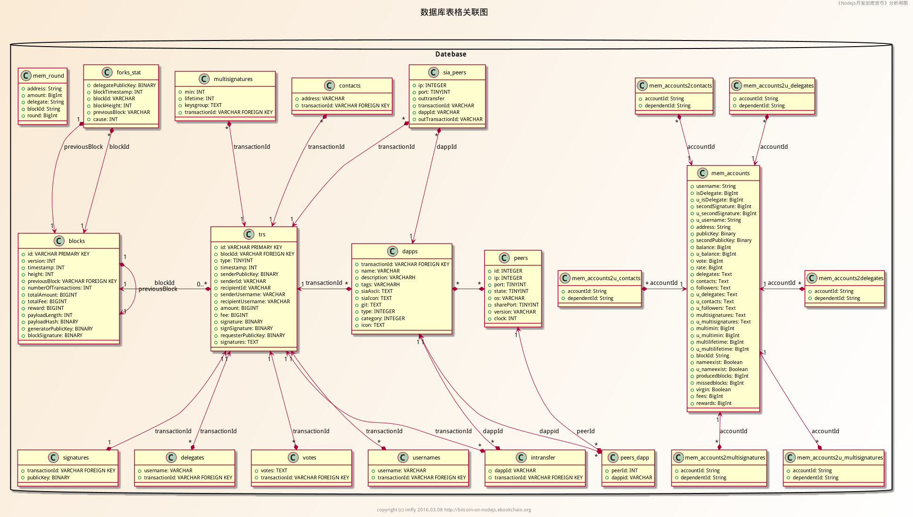

亿书，一个面向未来的自出版平台
前言
本篇的目的是通过一个产品的发行说明（白皮书），来了解产品最初的设计需求。无论是代码设计，还是源码分析，我们都要循着这些需求去渐次深入到代码内部，这样的思路，会帮助我们更加轻松、快速的掌握代码精髓。
亿书，是什么？
官方定义（白皮书 v1.0 2016.5.1）
亿书，英文名Ebook，是一个去中心化的出版平台，由新一代加密货币驱动，具备版权签名与认证、 协同创作、一键发布等功能，将促进人们更加主动地积累知识、分享经验，为人类创作注入新动力。 对于出版社等企业用户和第三方开发者，它提供了侧链功能，可以基于亿书强大的网络和市场， 使用亿书侧链、智能合约、云存储和计算节点，构建、发布个性化的去中心化软件，货币化一切有 形或无形资产，并从中盈利。
核心目标
亿书的核心目标是通过记录这个人类古老而简单的诉求，为知识创作和积累注入新动力，进而建立覆盖全人类的P2P网络，改善人类使用网络的体验，打造包括电子商务在内的融合社会化、信息化、商业化、物联网的全新网络。
使用场景
对普通人而言，亿书与日常使用的办公软件（word，wps等）相似，就是一款简单的文字写作工具，具备安装简单、编辑可视、互动协作等功能，还可直接获得海量专业、系统的电子书籍。
对于博客爱好者，它可以安装在服务器端，提供公开访问的能力，大大简化博客安装、个性化与维护的难度。对于专业作者，它的电子书编辑、一键发布、版权保护与交易等自出版功能，具备强大吸引力。
对于出版社等企业用户和第三方开发者，它提供了侧链功能，可以基于亿书强大的网络和市场，使用亿书侧链、智能合约、云存储和计算节点，构建、发布个性化的去中心化软件，货币化一切有形或无形资产，并从中盈利。
对于读者、作者和开发者而言，亿书就是一个知识宝库、巨大市场和一站式解决方案，是一个加密货币驱动的相互促进、互为所用、共享共赢的生态系统。
核心功能
- 新一代极具创新精神的加密货币；
- 高性能对等网络；
- 去中心化的存储和计算；
- 易用易扩展的可编程侧链；
- 简单易用的可视化编辑器；
- 多重签名；
- 去中心化博客
- 自出版平台
- 版权签名与验证
- 针对主流开源产品的官方插件；
- 面向第三方开发者的开发工具包SDK。
技术架构
亿书完全基于Node.js平台研发，后台使用Express.js框架，前端使用Ember.js框架，客户端使用Electron框架，数据库使用SQLite，前后端统一使用Javascript脚本语言，界面使用HTML5 和 CSS3。
亿书，使用建立在HTTP协议之上的点对点网络，基于DPOS（授权股权证明机制）共识算法，无需挖矿，大约1亿枚币子。每个块的时间为10秒，每个周期的101个区块均由 101个代表随机生成，广播并添加到区块链里，在得到6-10个确认后，交易完成，一个完整的101个块的周期大概需要16分钟。
数据库表格及其关联关系模型：

从代码上看，它使用Express作为开发框架，各功能模块都放在modules文件夹里，结构简单清晰。我们看看它核心模块的UML图，大概了解一下吧。

总结
本篇主要是概览，目的是了解我们要分享的东东是什么。同时也说明，该应用的价值：既可以学习加密货币开发，也可以对侧链的开发有所了解，是目前覆盖区块链技术多个方面的应用之一。
链接
本系列文章即时更新，若要掌握最新内容，请关注下面的链接
本源文地址： https://github.com/imfly/bitcoin-on-nodejs
电子书阅读： http://bitcoin-on-nodejs.ebookchain.org
参考
亿书白皮书v1.0 http://ebookchain.org/ebookchain.pdf
亿书官方网站： http://ebookchain.org